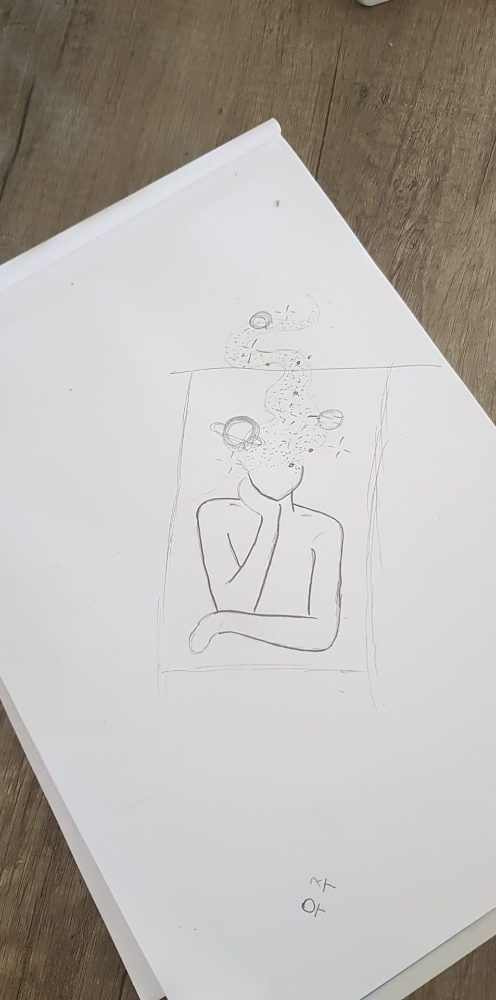

Home
Over mezelf
Studies
Hobbies
Georgia Loredana Irene Bocks
Over mezelf
17jaar
26/07/2002
Half Duits, half Italiaans
Favoriete kleur:
baby-roos
Mijn hobbies

Tekenen
Muziek luisteren
Netflix kijken
Slapen
Fuiven
Mijn studies
Ik ben 1 keer blijven zitten.
Moderne Wetenschappen in zavo en HHC
2 jaar STW in Zavo
IT & Netwerken